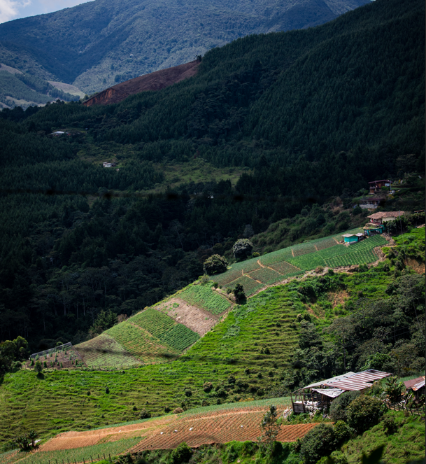
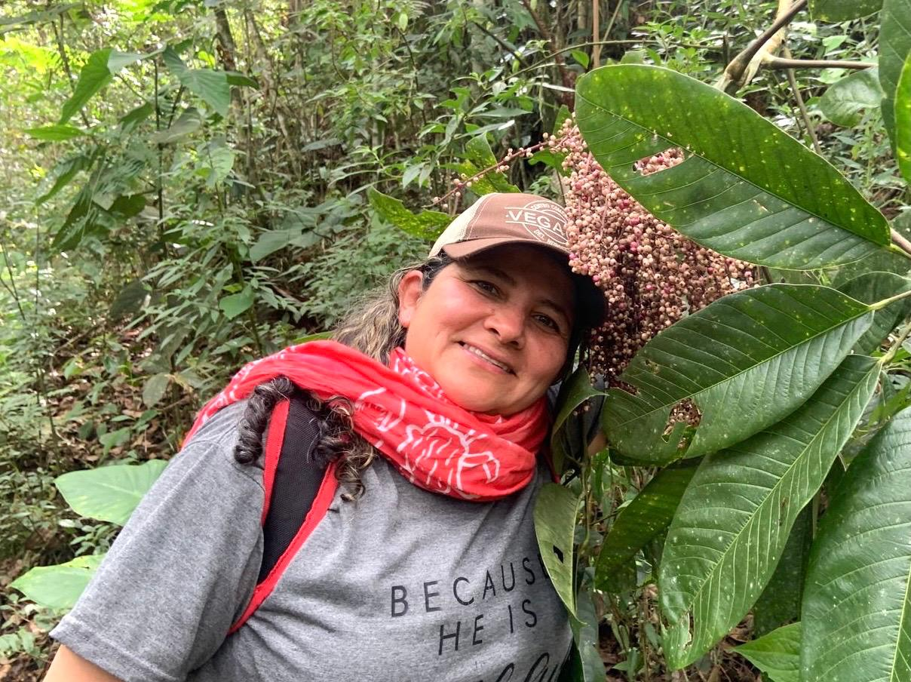

Experiencias transformadoras en el corazón de la montaña.
Reserva tu experiencia ahoraUbicada en un paraje natural de ensueño en San Antonio de Prado, Eco Astilleros ofrece un espacio de conexión profunda con la tierra. Promovemos la sostenibilidad a través de nuestras prácticas amigables con el medio ambiente.
Nuestra hermosa huerta orgánica es el corazón del lugar, donde cultivamos parte de los alimentos que llegan a tu mesa. Además, contamos con un maravilloso ambiente natural ideal para relajarse y aprender sobre la vida en el campo.

Gastronomía típica antioqueña desde nuestra huerta a tu mesa

En Eco Astilleros, somos un restaurante campestre ubicado en la Finca agroturística Eco Astilleros , nuestro restaurante brinda experiencias de alimentación sana , en un entorno de naturaleza rodeado de montañas con una hermosa vista al sur del valle de aburrá.
Auténticas preparaciones de tradición antioqueña.
Vegetales frescos recién cosechados.
Pollos campesinos y hongos orellanas.
Descubre la aventura y la tranquilidad en cada uno de nuestros recorridos.

Avistamiento de aves, orquídeas y miradores naturales.

Plantas medicinales, recolección y meditación guiada.


Apicultura, cata de miel y respeto por el entorno.

Aprende prácticas sostenibles y conexión con la tierra.
Hospedaje persona día en nuestro eco hostal el Cebollal con vistas a la montaña y un ambiente campesino.
Síguenos en Instagram para enterarte de nuestros eventos, nuevas rutas y descubrir más de nuestra hermosa finca agroecológica.
Visitar @ecoastilleros